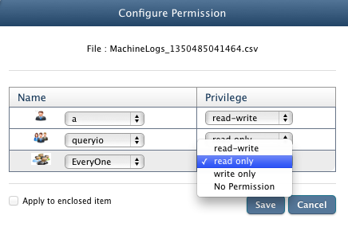

Access Control List (ACL)
In this chapter
This chapter explains data sharing among other users and configuring access permissions for the data.
Description
QueryIO provides users to share their data with other users.
An access control list, is a list of permissions attached to a file. An ACL specifies which users are granted access to files, as well as what operations are allowed on given files.
QueryIO provides facility for file owners to specify access permission on the files. File owners can restrict the access of files to set of users or groups and grant permissions to a set of users or groups.
To make it possible, ACL is maintained for each file.
Each file owner can specify access control through data browser from QueryIO UI. Whenever a user creates a file, he/she can specify set of users or groups that are allowed to access files or directories.
File owner can also provide combination of access permissions(read, write, execute) to limit the shared file access by other users.
- read: file is readable by owner, group or other.
- write: file is writeable. On a directory, write access means you can add or delete files.
- execute: file is executable (only for programs and shell scripts - not useful for data files). Execute permission on a directory means you can list the files in that directory
Permission are specified in UNIX format. Permissions that can be granted are :
- read-write
- read only
- write only
- no permission
Permission Settings
File sharing settings can be configured from Data Browser page.
Following are the steps to share files or directories with other users or groups and provide access permissions to them:
- Select the file or directory from the file explorer by selecting the checkbox against it.
- Now click on the Configure Permission button to edit sharing details.
- To share a selected file or directory with:
- Users, Select the user from the drop down list and the permissions to be granted.
- Groups, Select the groups from the drop down list and the permissions to be granted.
- Everyone, Select the permissions to be granted for public access.
- Above selected user, group or everyone can access the selected file or directory according to the permissions granted.
- Click Save to grant sharing permissions.

Copyright © 2015 QueryIO Corporation. All Rights Reserved.
QueryIO, "Big Data Intelligence" and the QueryIO Logo are trademarks
of QueryIO Corporation. Apache, Hadoop and HDFS are trademarks of The Apache Software Foundation.